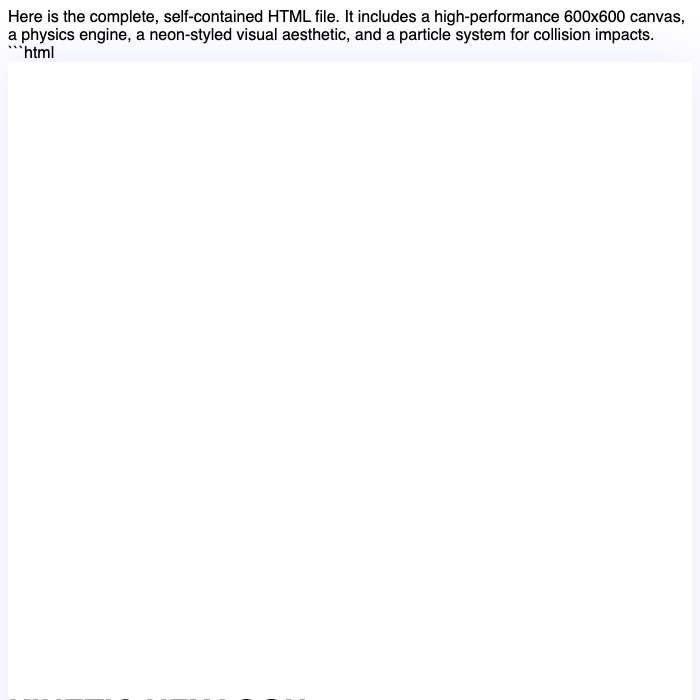

맥 스튜디오 로컬 llm 환경의 glm 4.7 flash 로컬 구동 실측
맥 스튜디오 M5 Max 환경에서 빠른 응답 속도와 도구 호출 10 / 10, 형식 지시 10 / 10의 높은 정확도를 원하는 사용자에게 맞습니다.
맥 스튜디오 M5 Max, 통합 메모리 48GB 환경에서 mlx-lm 0.32.0으로 glm 4.7 flash 로컬 모델을 구동해 실측했습니다. 짧은 입력(512토큰) 답 쓰는 속도는 105.8토큰/초로 사람이 읽는 속도(초당 약 다섯 토큰 안팎)보다 빠르며, 긴 입력(4096토큰) 답 쓰는 속도는 82.4토큰/초입니다. 가중치 용량 16.9GB에 최대 메모리 사용은 18.9GB로 측정되어 안정적인 로컬 llm 구동이 가능합니다.
이 맥에서 잰 숫자
| 모델 | GLM-4.7-Flash-4bit |
|---|---|
| 원본 저장소 | mlx-community/GLM-4.7-Flash-4bit |
| 가중치 용량(GB) | 16.9 |
| 라이선스 | mit |
| 측정 기기 | 맥 스튜디오 M5 Max, 통합 메모리 48GB |
| 측정 도구 | mlx-lm 0.32.0 (MLX 0.32.3) |
| 측정일 | 2026-10-21 |
| 짧은 입력(512토큰) 답 쓰는 속도(토큰/초) | 105.8 |
| 짧은 입력 읽는 속도(토큰/초) | 3445 |
| 긴 입력(4096토큰) 답 쓰는 속도(토큰/초) | 82.4 |
| 긴 입력 읽는 속도(토큰/초) | 3064 |
| 최대 메모리 사용(GB) | 18.9 |
| 한국어 답변 점수(5점 만점) | 4 |
| 한국어 답변에 외국어 섞임 | 없음 |
| 한국어 객관식(KMMLU 50문항) 정답 | 26 / 50 |
| 도구 호출 정확도(10문항) | 10 / 10 |
| 파이썬 코딩(10문제, 테스트 전부 통과) | 8 / 10 |
| 형식 지시 따르기(10문항) | 10 / 10 |
| 긴 글 속 문장 찾기(약 16K토큰) | 찾음 (10.8초) |
| 한 번에 만든 튀는 공 애니메이션 | 출력 한도에서 코드가 끝나지 못함(측정 설정 문제, 다시 잴 예정) |
답 쓰는 속도는 1초에 만들어 내는 토큰(글자 조각) 수입니다. 같은 모델도 기기·메모리·도구 버전에 따라 달라집니다.
한국어로 물어봤더니
질문: 맥에서 로컬 AI 모델을 처음 써 보려는 대학생에게, 장점 두 가지와 주의할 점 한 가지를 한국어로 짧게 알려 줘.
맥에서 로컬 AI를 써보는 대학생을 위해 요약해 드립니다. **장점 ①: '개인정보 보호'** ChatGPT나 클로바 같은 클라우드 AI는 입력한 질문을 분석해 학습에 쓰인다. 하지만 로컬 AI는 내 컴퓨터에서만 작동하므로, 내 질문이 외부로 유출되거나 학습 데이터에 포함될 일이 없어 **아주 안전**하다. **장점 ②: '무료로 계속 쓸 수 있다'** 클라우드 AI는 유료 구독을 해야 빠른 속도나 많은 사용량을 쓸 수 있다. 하지만 로컬 AI는 **인터넷이 안 되는 곳에서도**, 그리고 **돈을 내지 않아도** 언제든지 쓸 수 있다는 점이 큰 장점이다. **주의할 점 ①: '컴퓨터 사양'** 맥북의 'M 칩'이 강력하면 강력할수록 좋지만, 사양이 너무 낮은 모델은 **느리게 반응**하거나 오류가 날 수 있다. 처음 쓸 때는 가볍게 돌아가는 모델부터 시작하는 것이 좋다.
맥 환경에 맞춘 설명은 자연스럽지만, 클라우드 AI의 학습 정책 관련 서술이 지나치게 단정되어 있어 사실성에서 감점이 됩니다.
한 번에 만든 튀는 공 애니메이션
"회전하는 육각형 안에서 공 8개가 튀는 HTML 을 한 파일로 만들어 줘"라는 요청에 처음 낸 답을 그대로 실행한 화면입니다.

이럴 때 맞아요
- 도구 호출 정확도 10 / 10 및 형식 지시 따르기 10 / 10이 필요한 자동화 작업
- 맥 스튜디오 로컬 llm 환경에서 빠른 응답(짧은 입력 105.8토큰/초)을 원할 때
- 약 16K토큰의 긴 글 속 문장 찾기(10.8초) 및 파이썬 코딩(8 / 10) 작업
이럴 때는 다른 모델을
- 한국어 객관식(KMMLU 50문항) 정답이 26 / 50으로 높은 지식 시험 점수가 필요할 때
- 클라우드 AI의 학습 정책 관련 서술처럼 단정적인 서술 없이 엄격한 사실성이 요구될 때
- 파이썬 코딩 10문제 중 10문제 전체 통과 수준의 무결점 코드 작성이 필요할 때
자주 묻는 질문
glm 4.7 flash 로컬 구동 시 답 쓰는 속도는 사람이 읽는 속도와 비교해 어떤가요?
짧은 입력(512토큰) 답 쓰는 속도는 105.8토큰/초, 긴 입력(4096토큰) 답 쓰는 속도는 82.4토큰/초입니다. 이는 사람이 읽는 속도(초당 약 다섯 토큰 안팎)보다 빠릅니다.
맥에서 glm 4.7 flash 성능 및 메모리 사용량은 어떻게 측정되었나요?
맥 스튜디오 M5 Max, 통합 메모리 48GB 환경에서 최대 메모리 사용은 18.9GB(가중치 용량 16.9GB)였습니다. 짧은 입력 읽는 속도는 3445토큰/초, 긴 입력 읽는 속도는 3064토큰/초로 측정되었습니다.
한국어 답변 품질과 정확도는 어떤가요?
한국어 답변 점수는 5점 만점에 4점이며 외국어 섞임은 없었습니다. 다만 맥 환경 설명은 자연스러우나 클라우드 AI의 학습 정책 관련 서술이 지나치게 단정되어 있어 사실성에서 감점이 있었고, 한국어 객관식(KMMLU 50문항) 정답은 26 / 50이었습니다.
도구 호출과 코딩 등 실무 작업에 로컬 llm 추천 모델로 적합한가요?
도구 호출 정확도 10 / 10, 형식 지시 따르기 10 / 10을 기록했고, 파이썬 코딩은 10문제 중 8문제를 통과했습니다. 또한 약 16K토큰 긴 글 속 문장 찾기는 10.8초 만에 찾아 안정적인 성능을 보였습니다.
측정 방법
맥 스튜디오 M5 Max, 통합 메모리 48GB에서 mlx-lm 0.32.0 (MLX 0.32.3)로 측정했습니다. 입력 512토큰·4096토큰 뒤 128토큰을 생성하는 시험을 여러 번 반복한 평균이고, 한국어 답변은 온도 0으로 한 번 생성한 원문 그대로입니다(생각 과정은 떼고 답만). 추가 시험(있는 경우)은 모두 코드로 채점합니다: 한국어 객관식은 KMMLU(HAERAE-HUB, CC BY-ND 4.0) 10개 분야 50문항, 도구 호출·파이썬 코딩·형식 지시는 각 10문항(코딩은 인터넷이 막힌 환경에서 숨겨진 테스트 실행), 긴 글 찾기는 약 1만6천·3만2천 토큰 글 속에 넣은 문장을 찾는지, 튀는 공은 한 번에 만든 HTML 이 실제로 움직이는지입니다. 생각 기능은 끄고 온도 0으로 실행했습니다. 가중치는 Hugging Face의 mlx-community/GLM-4.7-Flash-4bit를 썼습니다.
측정일 2026-10-21 · 커밋 한 모금